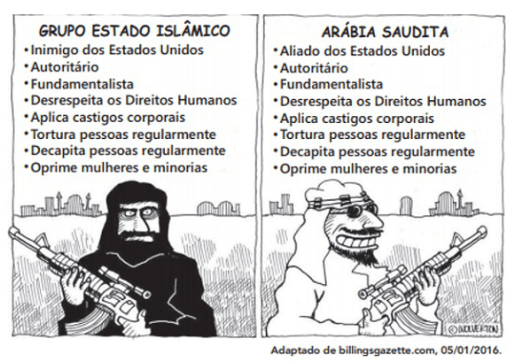
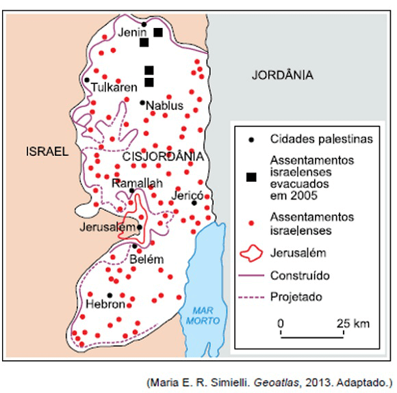
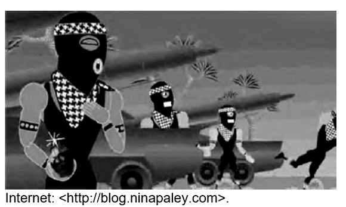
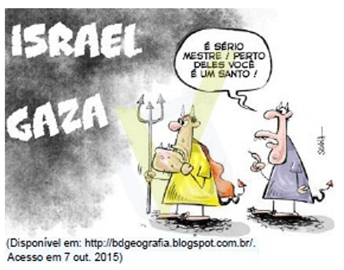

Conteúdo: Diversidade cultural, Petróleo. Questão palestina e libanesa.
Objetivo: Entender o conflito entre Israel e Palestina e os principais conflitos atuais na região do Oriente Médio.
Questão 01
(UERJ 2020) Entre 2014 e 2017, derrotar o Estado Islâmico (ISIS) foi uma das prioridades da política externa dos Estados Unidos. Ao final de 2017, o ISIS foi considerado militarmente derrotado, perdendo o controle de praticamente todos os territórios que havia conquistado na Síria e no Iraque.

A charge aponta a existência de uma incoerência entre os seguintes aspectos da política externa estadunidense no Oriente Médio:
a) alinhamento étnico e liberdade religiosa.
b) fundamento ideológico e interesse econômico.
c) conservadorismo social e protagonismo ambiental.
d) multilateralismo diplomático e unilateralismo bélico.
Comentário:
Objetivo da questão: Identificar contradições em política externa de grande potência geopolítica. Conforme pode ser claramente depreendido da charge, tanto o grupo Estado Islâmico, quanto o governo da Arábia Saudita, pautam suas práticas na mesma matriz cultural do fundamentalismo islâmico e agem de forma igualmente autoritária, em evidente desrespeito aos mais básicos direitos civis e políticos. Esse fato evidencia a incoerência da política externa estadunidense, que trata de maneira diametralmente oposta os dois grupos que possuem ideologia semelhante. A explicação para essa incoerência está vinculada principalmente aos interesses norte-americanos em manter a Arábia Saudita na condição de aliado estratégico para garantir suprimento de boa parte da demanda de petróleo dos Estados Unidos.
Questão 02
(ENEM 2018)
“Em Beirute, no Líbano, quando perguntado sobre onde se encontram os refugiados sírios, a resposta do homem é imediata: “em todos os lugares e em lugar nenhum”. Andando ao acaso, não é raro ver , sob um prédio ou num canto de calçada, ao abrigo do vento, uma família refugiada em volta de uma refeição frugal posta sobre jornais como se fossem guardanapos. Também se vê de vez em quando uma tenda com a sigla ACNUR (Alto Comissariado das Nações Unidas para Refugiados), erguida em um dos raros terrenos vagos da capital”.
JABER, H. Quem realmente acolhe os refugiados? Le Monde Diplomatique Brasil, out. 2015 (adaptado).
O cenário descrito aponta para uma crise humanitária que é explicada pelo processo de:
a) Migração massiva de pessoas atingidas por catástrofe natural.
b) Hibridização cultural de grupos caracterizados por homogeneidade social.
c) Desmobilização voluntária de militantes cooptados por seitas extremistas.
d) Peregrinação religiosa de fiéis orientados por lideranças fundamentalistas.
e) Desterritorialização forçada de populações afetadas por conflitos armados.
A Síria enfrenta, desde a “Primavera Árabe”, violenta Guerra Civil entre rebeldes e o exército comandado pelo ditador Bashar Al Assad. Esse conflito armado tem levado civis sírios a buscar refúgio no entorno em países de outros continentes. Assim, a crise humanitária também torna o território sírio uma área vulnerável, com as desocupações.
a) incorreta. Os refugiados citados no texto são oriundos de um estado em guerra civil, e não de catástrofes naturais.
b) incorreta. O texto se refere a refugiados, e não a um processo de hibridização cultural de povos homogêneos culturalmente.
c) incorreta. Apesar de existirem grupos extremistas em atuação no Líbano (como o Hezbollah), o texto se refere à presença de imigrantes refugiados sírios que ali estão porque fugiram da guerra civil em seu país.
d) incorreta. O texto mostra claramente que os sírios que estão em Beirute são refugiados em estado de miséria absoluta; não são migrantes peregrinos religiosos, e sim fugitivos da guerra civil em seu país de origem.
e) correta. De fato, o texto da questão mostra a presença de sírios refugiados da guerra erradicados no Líbano.
Questão 03
(ENEM 2018) A situação demográfica de Israel é muito particular. Desde 1967, a esquerda sionista afirma que Israel deveria se desfazer rapidamente da Cisjordânia e da Faixa de Gaza, argumentando a partir de uma lógica demográfica aparentemente inexorável. Devido à taxa de nascimento árabe ser muito mais elevada, a anexação dos territórios palestinos, formal ou informal, acarretaria dentro de uma ou duas gerações uma maioria árabe "entre o rio e o mar".
DEMANT, P. Israel: a crise próxima. História, n. 2. jul.-dez. 2014.
A preocupação apresentada no texto revela um aspecto da condução política desse Estado identificado ao(à)
a) abdicação da interferência militar em conflito local.
b) busca da preeminência étnica sobre o espaço nacional.
c) admissão da participação proativa em blocos regionais.
d) rompimento com os interesses geopolíticos das potências globais.
e) compromisso com as resoluções emanadas dos organismos internacionais.
A ideia da supremacia étnica numérica dos judeus israelenses, vislumbrada na criação do Estado de Israel, foi colocada em xeque pela baixa taxa de natalidade desses mesmos judeus, confrontada com as elevadas taxas de natalidade dos povos palestinos habitantes dos territórios ocupados em 1967. Com o tempo, tornar-se-ia insustentável para o Estado de Israel manter sua prevalência em territórios dominados por uma numerosa população palestina, sujeita a contínuos movimento de revolta independentista.
a) incorreto. Israel não abdicou de ocupação militar territorial.
b) correto. Israel sempre buscou ter supremacia étnico territorial sobre palestinos em seu território nacional.
c) incorreto. O texto não trata de questões econômicas e da participação do país em blocos econômicos regionais.
d) incorreto. Israel nunca rompeu com as potências internacionais ocidentais, pelo contrário, conta com apoio irrestrito dos Estados Unidos e Inglaterra.
e) incorreto. Israel não cumpre as resoluções internacionais acerca de sua postura sobre os palestinos e seu território, haja visto que se recusou a cumprir a divisão proposta pela ONU em 1947 sobre a partilha do território entre as duas nações.
Questão 04
(UEA-SIS 2018)

Concernente à questão entre Israel e Palestina, as linhas “construído” e “projetado” no mapa correspondem.
a) à transposição de água potável, que é utilizada para irrigar os cultivos jordanianos.
b) ao trecho georreferenciado que deveria caracterizar a fronteira de Israel.
c) à rota que exporta manufaturas israelenses à Jordânia.
d) ao muro que isola os palestinos, controlado pelo exército israelense.
e) à parcela do território que corresponde à chamada Faixa de Gaza.
Questão 05
(ENEM 2017)
“Palestinos se agruparam em frente a aparelhos de televisão e telas montadas ao ar livre em Ramalah, na Cisjordânia, para acompanhar o voto da resolução que pedia o reconhecimento da chamada Palestina como um Estado observador não membro da Organização das Nações Unidas (ONU). O objetivo era esperar pelo nascimento, ao menos-formal, de um Estado palestino. Depois da aprovação da resolução, centenas de pessoas foram à praça da cidade com bandeiras palestinas, soltaram fogos de artifício, fizeram buzinaços e dançaram pelas ruas. Aprovada com 138 votos dos 193 da Assembleia-Geral, a Comentário: eleva o status do Estado palestino perante a organização. Palestinos comemoram elevação de status na ONU com bandeiras e fogos”.
Disponível em: http://folha.com. Acesso em: 4 dez. 2012 (adaptado)
A mencionada resolução da ONU referendou o (a)
a) delimitação institucional das fronteiras territoriais.
b) aumento da qualidade de vida da população local.
c) implementação do tratado de paz com os israelenses.
d) apoio da comunidade internacional à demanda nacional.
e) equiparação da condição política com a dos demais países.
A aprovação de Comentário: da ONU – Organização das Nações Unidas que reconhecia a Palestina como um Estado observador não membro da Organização pela Assembleia Geral reflete o apoio da parte da comunidade internacional à demanda nacional palestina que espera- se permita futuramente a criação de um Estado nacional palestino.
a) Incorreta. Os Palestinos são hoje um povo sem território, que desde 1948 vivem dentro do território de Israel. Uma longa luta por independência e soberania é travada por esta nação em seu histórico território, hoje dominado pelos judeus. No texto do enunciado, a ONU reconhece a Palestina como um “Estado observador não membro da Organização das Nações Unidas”. Isso mostra que as 138 nações que aprovaram a Palestina como estado observador não se comprometeram com o reconhecimento da soberania nacional Palestina, fato que nos permite dizer que não houve apoio mundial para a soberania territorial da palestina e sim houve o reconhecimento de que a luta da nação Palestina é vista como legítima por estes países votantes.
b) Incorreta. Tal reconhecimento da ONU não trouxe qualquer mudança na situação econômica, social e política do povo palestino, que vivencia má qualidade de vida.
c) Incorreta. O reconhecimento da ONU não representa uma consolidação da paz entre Israel e a Palestina, uma vez que não funciona como tratado de Paz entre os dois envolvidos e ainda há tensões e enfrentamentos entre árabes e judeus em território israelense.
d) Correta. Está correta, pois como já mencionado, houve sim o reconhecimento de que a luta da nação Palestina é legítima, algo que vai ao encontro das reivindicações da nação palestina.
e) Incorreta. O texto fala que a ONU reconhece a Palestina como um “Estado observador não membro da Organização das Nações Unidas”. Tal afirmação mostra que apesar da aceitação da palestina como membro observado ela não foi aceita como membro igualitário dentro da Assembleia das Nações Unidas.
Questão 06
(UNB 2017) Um desenho animado irônico, satírico e inteligente, feito pela cartunista norte-americana Nina Paley, mostra o conflito histórico pelo domínio da região conhecida como Terra Santa. O desenho, intitulado This Land is Mine, ilustra a matança dos povos habitantes daquela região. This Land is Mine é uma paródia de The Exodus Song. Esta música era uma espécie de trilha sonora do sionismo norte-americano nas décadas de 60 e 70 do século passado para expressar o direito judaico sobre Israel. Ao colocar a música para todos os que estão em guerra cantarem, também se está criticando a canção original. Respeitando a cronologia das guerras, o desenho animado representa todas elas em torno da Terra Santa — nome bíblico que compreende o território de Israel, da Cisjordânia e de parte da Jordânia, que teria sido prometida ao povo judeu no Antigo Testamento.

Considerando o texto e a imagem anteriormente apresentados, julgue o item.
O texto menciona áreas situadas na região modernamente conhecida como Oriente Médio. Além de estratégica para a economia e a geopolítica do mundo contemporâneo, essa região é o berço histórico das três grandes religiões monoteístas: judaísmo, cristianismo e islamismo. Por adotar uma doutrina universalista desde a sua criação até os dias atuais, o Islã não se envolveu com questões de ordem política.
a) Certa.
b) Errada.
Questão 07
(URCA 2017) O conflito neste País nasceu do embate entre as forças leais ao Presidente Bashar Al¬Assad e os rebeldes que são contra a permanência dele no poder. Em 2011, seguindo o exemplo de outros países árabes, os habitantes protestaram contra o líder autoritário. A reação do governo foi imediata e violenta e muitos moradores pegaram em armas.
Foi o início da guerra civil n(o)a:
a) Turquia.
b) Síria.
c) Arábia Saudita.
d) Iraque.
e) Irã.
Questão 08
(UPF 2017) O Oriente Médio nas últimas décadas tem sido abalado por vários conflitos, como a Guerra do Líbano, o conflito Irã/Iraque, a Guerra do Golfo e a questão Palestina.
Assinale a alternativa cujo fator informado apresenta a melhor relação com a origem dessa situação conflituosa.
a) A criação do Estado de Israel, sob a tutela alemã-britânica, numa região de ricas reservas de petróleo.
b) O emaranhado de diferentes culturas, religiões e interesses estrangeiros numa área localizada a meio caminho entre a Ásia, a Europa e a África.
c) A disputa das poucas terras favoráveis ao cultivo numa área desértica, como as encontradas na planície da Mesopotâmia.
d) Os grandes lucros provenientes do petróleo que beneficiam apenas uma pequena parte da população nos países árabes.
e) O aumento, de forma rápida e acentuada, do preço do barril de petróleo nos países membros da OPEP (Organização dos Países Exportadores de Petróleo).
Questão 09
(UPF 2016) Iniciado em 1948, o conflito palestino- israelense constituiu, no Oriente Médio, o que se convencionou chamar de Questão Palestina, e que, ainda hoje, está longe de ser resolvida. A charge a seguir faz referência a esse conflito, apontando para o fato de que nem israelenses, nem palestinos são donos da razão numa região marcada pela violência.

Assinale a alternativa que indica a razão pela qual se deu o início do conflito palestino-israelense.
a) A exigência, pelos países do Oriente Médio, do cumprimento do Plano da ONU para a região da Palestina, que criava, em todo o território, o Estado Palestino, no final da Segunda Guerra Mundial.
b) A incapacidade dos países vencedores da Segunda Guerra de garantir a paz no Ocidente nos anos posteriores ao conflito, provocando uma fuga em massa de judeus para a Palestina.
c) O estabelecimento de uma instabilidade nas relações internacionais, pelo recém-criado Estado de Israel, que contava com o apoio dos Estados Unidos, da União Soviética e da ONU.
d) A recusa árabe a partilha da Palestina, imposta pela ONU, que submeteu a maior parte do território ao controle do recém- criado Estado de Israel, sem que se respeitasse a soberania dos povos dessa região.
e) A extinção oficial do mandato britânico sobre a Palestina, no final da Segunda Guerra, com reconhecimento imediato, pelos países vencedores, da independência de todos os países do Oriente Médio.
Questão 10
(ESPCEX 2012) O conflito árabe-israelense está relacionado com a criação de um Estado judeu na Palestina em 1948. Essa região era então habitada por árabes muçulmanos que se opuseram à divisão das terras. As guerras entre os dois povos transformaram o Oriente Médio numa das regiões mais instáveis do globo.
Leia as afirmações abaixo sobre esse conflito e suas origens:
I – A ONU não apoiou e se absteve de qualquer envolvimento no processo de criação do Estado de Israel, já que pretendia evitar o surgimento de novos conflitos após a Segunda Guerra Mundial.
II – A mais decisiva das guerras árabe-israelenses, do ponto de vista da alteração das fronteiras, foi a Guerra dos Seis Dias, em 1967, quando Israel ocupou o Sinai, a Faixa de Gaza, Cisjordânia e as Colinas de Golan.
III – Os conflitos acabaram levando à formação de campos de refugiados, onde passaram a viver milhares de palestinos.
IV – Em 1973, com a Guerra do Yom Kippur, a OPEP interrompeu o fornecimento de petróleo para os países aliados de Israel, provocando grande aumento no preço do produto.
V – Durante a Guerra Fria, os Estados Unidos e a União Soviética buscaram uma política neutra e não tiveram nenhum envolvimento nas guerras árabe-israelenses.
Assinale a única alternativa em que todos os itens estão corretos
a) II, III, IV e V.
b) II, III e IV.
c) I, II, III e IV.
d) II, IV e V.
e) I, IV e V.